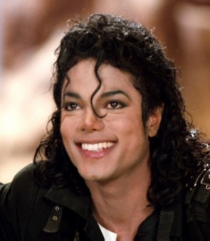
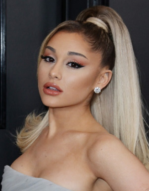
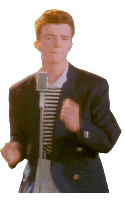

POP
O QUE É?
O Pop é um gênero musical que intriga diferentes estilos, elementos de diversas músicas e normalmente apresenta uma estrutura de mais fácil memorização, por apresentar ganchos e refrão, além de um curto período de duração. Possuindo características sensíveis e melódicas durante sua composição musical, temas que fazem referência geral e que podem ser vistos em todo o planeta.
Michael Jackson desafiando a gravidade
E é por isso que fez dessa forma tanto sucesso, tanto no Brasil, como no mundo como um todo. A "pop music" se difundiu quebrando padrões e estilos conquistando de maneira tão intensa a todos que criou tanto influências no mundo da moda e até mesmo mudou o jeito de se falar. Assim como o sertanejo em nosso país, possui diversas peças das quais fazem referência ao tema. Mas afinal, como tudo isso surgiu?
COMO SURGIU?
Nos anos 30, o cenário musical buscava algo diferente dos estilos escutados, era necessário um novo formato e algo além para quebrar o convencional. E foi assim em meio às influências do jazz, soul, country e outros que surgiu o pop, mas que somente se firmou como um gênero nos anos 50.
Despertando nos Estados Unidos, mas causando euforia em todos aqueles que escutavam suas canções, justamente por ser mais fácil, em razão de possuir batidas repetitivas, adentrando assim de maneira rápida na mente de seus ouvintes.
Ademais, vale citar as apresentações e shows animados e extravagantes, com caracterizações próprias, danças e outros recursos que alcançaram muitas pessoas.
Kate Perry em uma performance
Mas apesar de toda sua construção e história ter vindo desse país, seu nome foi selecionado a partir do significado do termo “pop” no Reino-Unido, que se remetia a uma abreviação da palavra “popular”, que retrata dessa maneira um som que estivesse ao alcance e atendesse aos gostos de todos.
EXEMPLOS DE ARTISTAS
- Michael Jackson 
- Madonna
- Shawn Mendes
- Ariana Grande 
- Ed Sheeran
VÍDEO EXPLICATIVO
Gostou desse estilo musical? Que tal agora ouvir um pouco das melhores músicas desse gênero. É só clicar no vídeo:
EI!
ONDE CÊ TA INDO?
A PÁGINA TA LÁ EM CIMA, NÃO SEI SE OCÊ SABIA
TA BOM ENTÃO, CONTINUA ROLANDO PRA BAIXO
NÃO TEM NADA PRA VER AQUI
